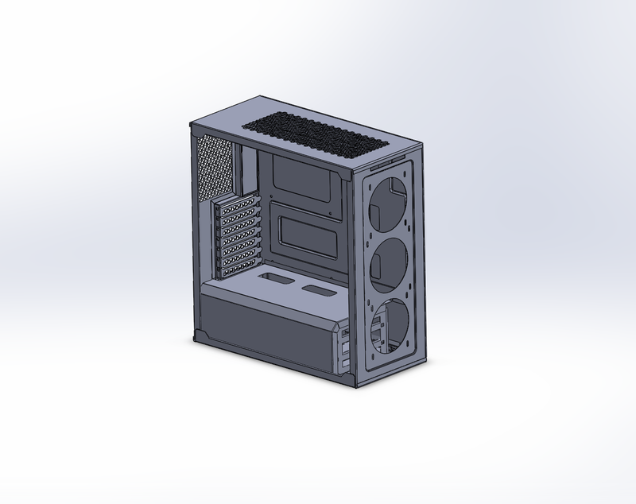

Overview
Two self-directed SolidWorks modeling projects to build proficiency across different CAD disciplines: a PC tower case exercising sheet metal and multi-body part design, and a wireless mouse exercising advanced surfacing and ergonomic freeform geometry.
PC Tower Case
A full-size ATX PC tower case modeled with sheet metal features. Includes fan mounting cutouts, PCIe expansion slot openings, ventilation grilles, cable management holes, and internal standoff features.

Wireless Mouse
An ergonomic wireless mouse modeled using advanced surfacing techniques. Features smooth organic contours, a scroll wheel recess, side grip indentations, and a split-body shell design.